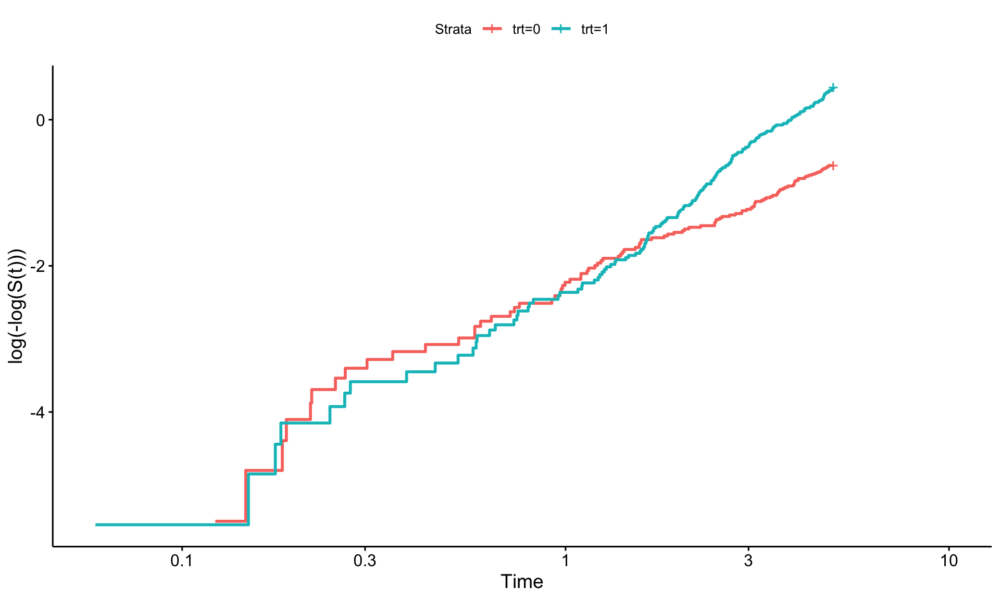
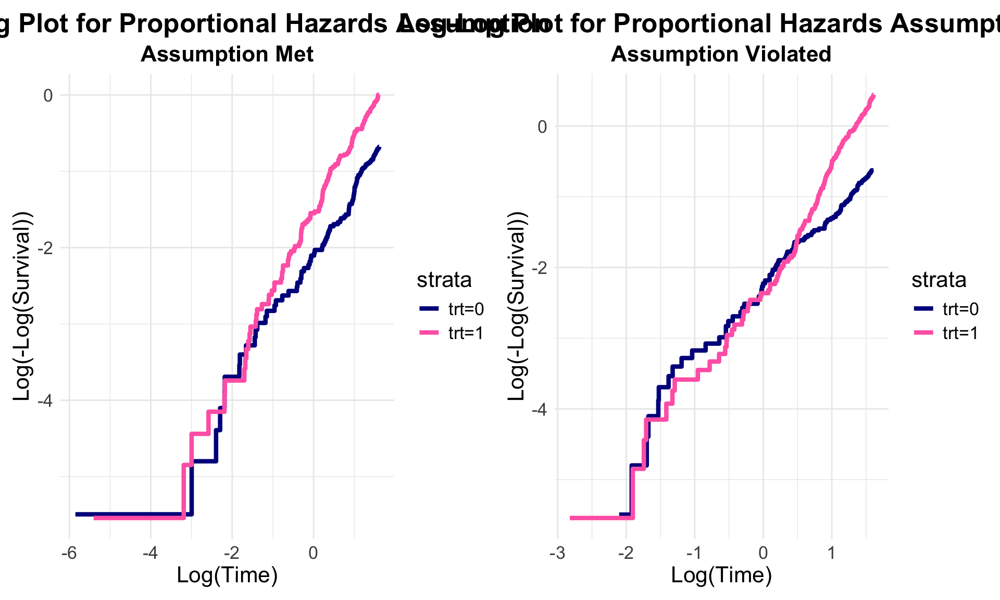
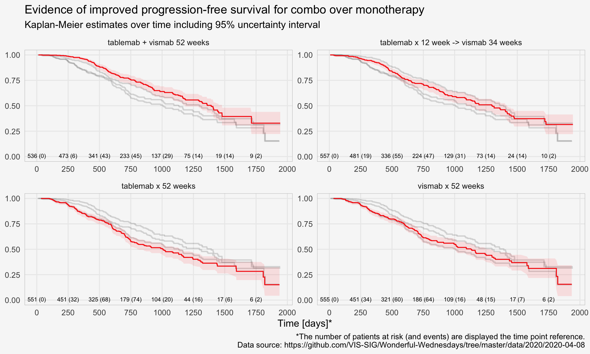

Time to Event Data Visualization
KM
Kaplan-Meier plot
This is a study of a new investigational medicine for the treatment of a rare type of vasculitis, with patients randomised to active treatment or placebo, with an on-treatment period of 52 weeks and a subsequent off-treatment follow-up period of up for 8 weeks. An ideal medicine would reduce vasculitis symptoms and/or enable a reduction in OCS dose and/or reduce the risk of relapse. Additional endpoints are defined for total number of days the patient was in remission during the on-treatment period, and a binary endpoint for whether a patients achieved remission within the first 24 weeks and maintained in remission until the end of the on-treatment period.
theme_set(theme_minimal(base_size = 8))
vas_data <- read_csv("./01_Datasets/vas_data.csv")
var_label(vas_data) <- c(
subject = 'Subject ID',
trt01pn = 'Randomised treatment (0 = Placebo; 1 = Treatment)',
ady = 'Study Day',
sym = 'Vasculitis symptom score',
dose = 'Oral Corticosteroid (OCS) dose',
rem = 'Subject in Remission, i.e. Vasculitis Symptom Score = 0 and OCS Dose <= 7.5 mg/day (Y/N)',
rel = 'Relapse Event (Y)',
acc_rem = 'Accrued Duration of Remission (Days)',
sus_rem = 'Subject Achieved Remission Within First 24 Weeks and Remained in Remission Until EOS? (Y/N))'
)
# 1 rec per subject
vas_per <- vas_data %>%
distinct(subject, trt01pn, acc_rem, sus_rem) %>%
mutate(trt01pc = factor(trt01pn,
levels = c(1, 2),
labels = c("P", "T")))
# 1 rec per subject
vas_event <- vas_data %>%
group_by(subject) %>%
filter(rem == "Y") %>%
arrange(ady) %>%
filter(row_number() == 1)
# 1 rec per subject
vas_noevent <- vas_data %>%
group_by(subject) %>%
filter(rem == "N") %>%
arrange(ady) %>%
filter(row_number() == n()) %>%
mutate(adyN = ady)
vas_all <-
bind_rows(vas_event, vas_noevent) %>%
group_by(subject) %>%
arrange(subject) %>%
filter(row_number() == 1) %>%
mutate(
CNSR = if_else(rem == "Y", 0, 1),
AVAL = ady / 30.5,
trt = factor(
trt01pn,
levels = c(1, 2),
labels = c("Placebo", "Treatment")
)
)
mod <- estimate_KM(vas_all, strata = "trt")
pp <-
visr(
mod,
conf.int = 0.95,
fun = "event",
x_label = "Time to remission [months]",
y_label = "event rate"
) %>%
add_CI(style = "ribbon")
pp +
labs(title = "Treatment puts more patients in to remission earlier",
subtitle = "i.e. Vasculitis Symptom Score = 0 and OCS Dose ≤ 7.5 mg/day") +
theme(legend.position = "bottom",
legend.title = element_blank())Log-Log Plot
To check the proportional hazards (PH) assumption in survival analysis, a log-log plot can be useful. This involves three steps:
- Estimating the survival function, often with the Kaplan-Meier estimator.
- Estimating survival at specific time points.
- Plotting log(time) versus log(-log(Survival at time t)).
If the PH assumption holds, the lines in this plot should appear parallel. However, if they converge, diverge, or overlap, this could indicate a violation of the assumption. It’s worth noting that assessing these plots can be subjective—perfect parallelism isn’t always necessary, but the lines should be reasonably close.
Paul Allison, in Survival Analysis Using SAS, highlights an
often-overlooked perspective: while the PH assumption might not be
perfectly met, the average effect observed over time may still be
meaningful. He suggests that the focus on PH might sometimes be
excessive, as all models involve assumptions, some of which are less
critical than others. Statistical tests like cox.zph in R’s
survival package provide a more objective measure of the PH
assumption by testing residuals. This balanced view helps in
interpreting models where the assumption might not be entirely
satisfied, emphasizing that minor deviations don’t always compromise the
model’s utility.
# library(tidyverse) # ol' faithful
# library(simsurv) # for simulating survival (TTE) data
# library(survival) # for analyzing survival data
# library(survminer) # for analyzing/plotting survival data
# library(patchwork) # combining plots
# Note: it's been commented out, however there is the option to add a covariate (c1) if interested.
# When Proportional Hazards Assumption Holds ----
set.seed(456) # setting seed for reproducibility
#... Simulating Data ----
# Specifying parameters for the simulation
n <- 500 # arbitrarily choosing sample size of 500
lambda <- 0.1
beta <- c(trt = log(2)) #, c1 = log(1.5)) # Hazard ratio of 2 for treatment and 1.5 for covariate 1
# Covariate
covariates <- tibble(id = 1:n,
trt = rbinom(n, 1, prob = 0.5)#,
#c1 = rnorm(n, mean = 10, sd = 2)
)
# Simulate survival times
data_ph <- simsurv::simsurv(
dist = "weibull", # using a Weibull distribution
lambdas = lambda,
gammas = 1,
betas = beta,
x = covariates,
maxt = 5 # maximum time of 5 years
)
# Combine simulated survival data with covariates
data_ph <- left_join(data_ph,
covariates,
by = "id")
#... Test the proportional hazards assumption ----
# Estimating the survival function
km_ph <- survival::survfit(survival::Surv(time = data_ph$eventtime, event = data_ph$status) ~ trt,
data = data_ph)
# Checking the plot
survminer::ggsurvplot(km_ph, fun = "cloglog")# When Proportional Hazards Assumption Doesn't Hold ----
#... Simulating Data ----
# Note, this is the same as above however we are adding a time-dependent
# component. Using simsurv this is the tde and tdefunction arguments in the
# simsurv() function.
# Simulate survival times.
# Note: for this case, the treatment will have non-PH however the covariate 1
# actually will meet the PH assumption.
data_nonph <- simsurv::simsurv(
dist = "weibull", # Weibull distribution again
lambdas = lambda,
gammas = 1,
betas = beta,
x = covariates,
tde = c(trt = 0.5), # specifying the time dependent function (aka PH not met)
tdefunction = "log", # making time dependent
maxt = 5 # maximum time of 5 years
)
# Combine simulated survival data with covariates
data_nonph <- left_join(data_nonph, covariates, by = "id")
#... Test the proportional hazards assumption ----
# Estimating the survival function
km_nonph = survfit(survival::Surv(time = data_nonph$eventtime, event = data_nonph$status) ~ trt,
data = data_nonph)
survminer::ggsurvplot(km_nonph, fun = "cloglog") # checking how the plot looks.
# Plots! ----
#... PH Assumption Met ----
# Tidying results from earlier
km_data <- broom::tidy(km_ph)
# Adding the log-log transformation for survival and log of time
km_data <- km_data %>%
mutate(log_neg_log_surv = log(-log(estimate)),
log_time = log(time))
# Plotting!
ph_plot <- ggplot(km_data, aes(x = log_time, y = log_neg_log_surv, color = strata)) +
geom_step(size = 1.5) +
labs(x = "Log(Time)", y = "Log(-Log(Survival))",
title = "Log-Log Plot for Proportional Hazards Assumption",
subtitle = "Assumption Met") +
theme_minimal() +
theme(
plot.title = element_text(hjust = 0.5, face = "bold"),
plot.subtitle = element_text(hjust = 0.5, face = "bold"),
text = element_text(size = 16)
) +
scale_color_manual(values = c("darkblue", "hotpink"))
#... PH Assumption Violated ----
# Tidying results from earlier.
km_data_nonph <- broom::tidy(km_nonph)
# Adding the log-log transformation for survival and log of time
km_data_nonph <- km_data_nonph %>%
mutate(log_neg_log_surv = log(-log(estimate)),
log_time = log(time))
# Plot using ggplot2
nonph_plot <- ggplot(km_data_nonph, aes(x = log_time, y = log_neg_log_surv, color = strata)) +
geom_step(size = 1.5) +
labs(x = "Log(Time)", y = "Log(-Log(Survival))",
title = "Log-Log Plot for Proportional Hazards Assumption",
subtitle = "Assumption Violated") +
theme_minimal() +
theme(
plot.title = element_text(hjust = 0.5, face = "bold"),
plot.subtitle = element_text(hjust = 0.5, face = "bold"),
text = element_text(size = 16)
) +
scale_color_manual(values = c("darkblue", "hotpink"))
#... Combining into one plot ----
# This where the patchwork package is extremely useful.
ph_plot + nonph_plot
Augmented survival plots
Visualise the pattern of events (disease progression, death, etc) on a summary data level or on a patient level data. Highlight differences between treatments or subgroups.
The “trial” aims to determine if a combination of two therapies tablemab (T) plus vismab (V) improves outcomes for metastatic human epidermal growth factor 2–positive breast cancer and increases the pathologic complete response in the neoadjuvant setting (treatment given as a first step to shrink a tumor before the main treatment or surgery).
The trial has four treatment arms, patients with centrally confirmed human epidermal growth factor 2-positive early breast cancer were randomly assigned to 1 year of adjuvant therapy with V, T, their sequence (T→V), or their combination (T+V) for 52 weeks. The primary end point was progression-free survival (PFS).
As defined by Cancer.gov: “the length of time during and after the treatment of a disease, such as cancer, that a patient lives with the disease but it does not get worse. In a clinical trial, measuring the progression-free survival is one way to see how well a new treatment works”.
# library(dplyr)
# library(ggplot2)
# library(broom)
# library(survival)
# library(patchwork)
# load data
ADTTE <- read_csv('./01_Datasets/2024-08-12-psi-vissig-adtte.csv') %>%
mutate(EVNTDESCN=case_when(
EVNTDESC=="Death" ~ 1,
EVNTDESC=="PD" ~ 2,
EVNTDESC=="Lost to follow-up" ~ 3,
EVNTDESC=="No next-line therapy initiated" ~ 4,
EVNTDESC=="Ongoing on first next-line therapy" ~ 5,
EVNTDESC=="Second next-line therapy initiated" ~ 6))
# plot KM curve by treatment
d <- survfit(Surv(AVAL, CNSR == 0) ~ TRT01P , data = ADTTE ) %>%
tidy(fit) %>%
rename(TRT01P=strata) %>%
mutate(TRT01P=gsub('TRT01P=', '', TRT01P))
a <- ggplot(data=d, aes(x=time, y=estimate, group = TRT01P, colour = TRT01P)) +
# do not inherit legend from ggplot
geom_line(show.legend = T) +
geom_point(pch=ifelse(d$n.censor>0,"|","")) +
theme_bw() +
theme(legend.position="top",
legend.text = element_text(size=12)) +
guides(colour = guide_legend(title = "")) +
labs(y="", x="Time (days)") +
scale_color_brewer(palette="Set1")+
annotate("text", x=-250, 0.35, label = "Progression Free Survival", hjust = 0, vjust = 1, angle=90) +
coord_cartesian(xlim = c(0, 2000), clip = 'off')
ab <- ggplot(data = ADTTE, aes(x=AVAL, y=reorder(EVNTDESC, -EVNTDESCN), colour=TRT01P)) +
geom_point(pch=ifelse(ADTTE$CNSR==1, "|", "x"), size=3, alpha=0.5) +
facet_grid(cols = vars(TRT01P)) +
theme_bw() +
theme(legend.position="none") +
labs(y="", x="Time (days)") +
scale_color_brewer(palette="Set1")
ba/b +
plot_layout(heights = c(2, 1))# ggsave("figures/survplot_v1_2024-09-07.png", width = 16, height = 9)CIF
Lasagna plot
Similar to a lasagna plot or heatmap, this chart shows timelines of the patients achieving remissions. The sorting is very helpful for identifying when they started their remission, a message also supported by the title.
theme_set(theme_minimal(base_size = 8))
vas_data <- read_csv("./01_Datasets/vas_data.csv")
var_label(vas_data) <- c(
subject = 'Subject ID',
trt01pn = 'Randomised treatment (0 = Placebo; 1 = Treatment)',
ady = 'Study Day',
sym = 'Vasculitis symptom score',
dose = 'Oral Corticosteroid (OCS) dose',
rem = 'Subject in Remission, i.e. Vasculitis Symptom Score = 0 and OCS Dose <= 7.5 mg/day (Y/N)',
rel = 'Relapse Event (Y)',
acc_rem = 'Accrued Duration of Remission (Days)',
sus_rem = 'Subject Achieved Remission Within First 24 Weeks and Remained in Remission Until EOS? (Y/N))'
)
# 1 rec per subject
vas_per <- vas_data %>%
distinct(subject, trt01pn, acc_rem, sus_rem) %>%
mutate(trt01pc = factor(trt01pn,
levels = c(1, 2),
labels = c("P", "T")))
# 1 rec per subject
vas_event <- vas_data %>%
group_by(subject) %>%
filter(rem == "Y") %>%
arrange(ady) %>%
filter(row_number() == 1)
# 1 rec per subject
vas_noevent <- vas_data %>%
group_by(subject) %>%
filter(rem == "N") %>%
arrange(ady) %>%
filter(row_number() == n()) %>%
mutate(adyN = ady)
vas_all <-
bind_rows(vas_event, vas_noevent) %>%
group_by(subject) %>%
arrange(subject) %>%
filter(row_number() == 1) %>%
mutate(
CNSR = if_else(rem == "Y", 0, 1),
AVAL = ady / 30.5,
trt = factor(
trt01pn,
levels = c(1, 2),
labels = c("Placebo", "Treatment")
)
)
mod <- estimate_KM(vas_all, strata = "trt")
b <- vas_all %>%
ggplot(aes(y = reorder(subject,-ady), x = ady)) +
geom_point(alpha = 0.1) +
geom_point(alpha = 0.1,
aes(y = reorder(subject,-ady), x = ady + acc_rem),
colour = "red") +
geom_linerange(alpha = 0.8,
aes(
y = reorder(subject,-ady),
xmin = ady,
xmax = ady + acc_rem
),
colour = "red") +
facet_wrap(~ trt, ncol = 2, scales = "free_y") +
theme_bw(base_size = 8) +
theme(
panel.grid.major.y = element_blank(),
panel.grid.minor.x = element_blank(),
panel.grid.minor.y = element_blank(),
axis.text.y = element_blank(),
axis.ticks = element_blank()
) +
labs(title = "Time to remission including remission duration",
subtitle = "Vasculitis Symptom Score = 0 and OCS Dose ≤ 7.5 mg/day") +
xlab("Study day") +
ylab("Subjects")
b
# ggsave("remission-individual.png", b, dpi = 660, scale = 2)Sorted lollipop plots for PFS Data
Swimmer Plot for Time to Response Data